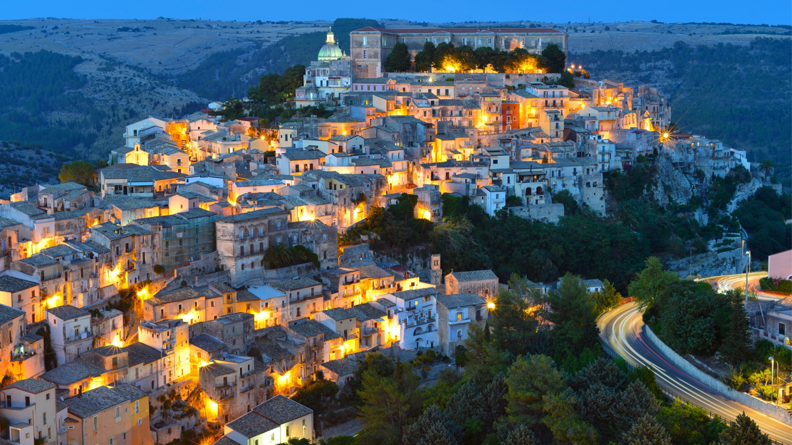

RAGUSA IBLA
Il cuore barocco
Ragusa Ibla è l'antico centro storico della città, un labirinto di viuzze, scalinate e piazze scenografiche. Completamente ricostruita dopo il terremoto del 1693, è un vero gioiello barocco dominato dalla maestosa cupola del Duomo di San Giorgio.